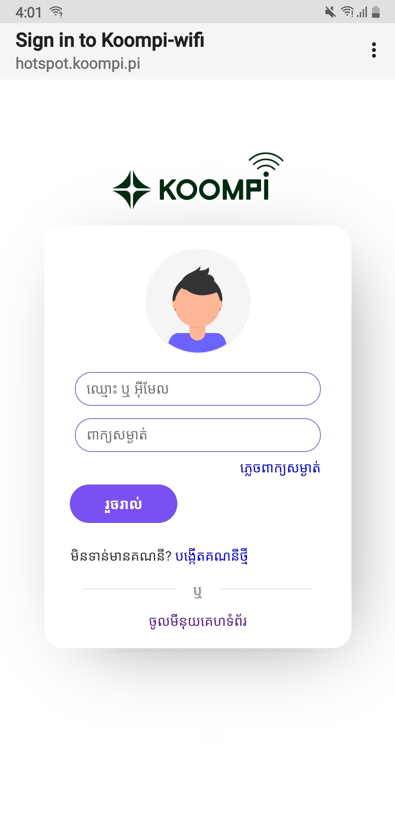
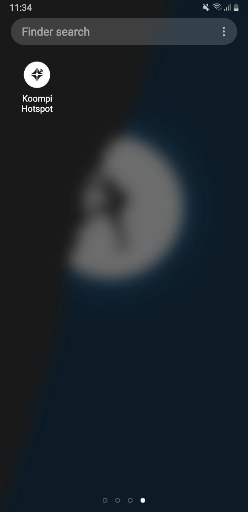

របៀបចុះឈ្មេាះប្រើប្រាស់ KOOMPI Wi-Fi
ការណែនាំអំពី KOOMPI Wi-Fi
ដូចដែលអ្នកបានឃើញរូបភាពខាងលើនេះ យើងហៅថា Captive Portal ឬ គេហទំព័រមួយដែលត្រូវបានបង្ហាញដល់អ្នកប្រើប្រាស់ ដែលបានភ្ជាប់វ៉ាយ ហ្វាយ (Wi-Fi) ឬបណ្តាញមានខ្សែ (Wired Network) ដើម្បីផ្ទៀងផ្ទាត់ភាពត្រឹម ត្រូវ មុនពេលពួកគេទទួលបានការចូលប្រើធនធានបណ្តាញ កាន់តែទូលំទូលាយ តាមរយៈអ៊ីនធឺណិត (Internet) ។
តេាះឥឡូវយើងមកមើលមានអ្វីខ្លះនៅក្នុងរូបភាពខាងលើ៖
1.
អ្នកនឹងឃើញមានប្រអប់ពីរដូចជា ប្រអប់ឈ្មេាះ ឬ អ៊ីម៉ែល និង ប្រអប់ពាក្យ សម្ងាត់ ( អ្នកត្រូវបង្កើត ឈ្មោះនិងពាក្យសម្ងាត់ជាមុនសិន ។ នៅខាងក្រោម យើងនិងប្រាប់អ្នកពីរប្រៀបបង្កើតឈ្មោះនិងពាក្យសម្ងាត់នេះ ។ )
2. នៅពីក្រោមប្រអប់ពាក្យសម្ងាត់អ្នកនឹងឃើញ ពាក្យថា ភ្លេចពាក្យសម្ងាត់ដែល វាជាកន្លែងសំរាប់អោយកំណត់ពាក្យសម្ងាត់ឡើងវិញនៅពេលដែលអ្នកភ្លេចពាក្យ សម្ងាត់អ៊ីម៉ែលរបស់អ្នក ។

3. បន្ទាប់មកអ្នកនិងឃើញប៊ូតុងមួយឈ្មេាះថា រួចរាល់ ជាកន្លែងផ្ទៀងផ្ទាត់ភាព ត្រឹមត្រូវ ។

4. បន្ទាប់មកអ្នកនិងឃើញពាក្យថា មិនទាន់មានគណនីទេ? បង្កើតគណ នីថ្មី ជាកន្លែងចុះឈ្មេាះបង្កើតគណនីសំរាប់ប្រើប្រាស់ជាមួយ KOOMPI Wi-Fi ។
5. ចុងក្រោយនេាះគឺ មីនុយគេហទំព័រ ដែលជាកន្លែងបង្ហាញពីគេហទំព័រ ( website ) ។
ដូចច្នេះធ្វើដូចម្ដេចដើម្បីចូលប្រើធនធានបណ្តាញកាន់តែទូលំទូលាយតាម រយៈអ៊ីនធឺណិត (Internet) បាន ?
ពេលនេះ KOOMPI Teams នឺងណែនាំអ្នកទាំងអស់គ្នាមកចុះឈ្មេាះបង្កើត គណនីសំរាប់ប្រើប្រាស់ជាមួយ KOOMPI Wi-Fiដូចខាងក្រោម ៖
ជំហានទី១៖
លោកអ្នកត្រូវទាញយកកម្មវិធី Koompi Wi-Fi ពី Play Store សំរាប់អ្នក ប្រើប្រាស់ទូរស័ព្ទ Android នឹង AppStore សំរាប់អ្នកប្រើប្រាស់ ទូរស័ព្ទ IOS ។
ជំហានទី២៖
ដំណើរការកម្មវិធី Koompi Wi-Fi ដោយចុចលើនិមិត្តសញ្ញាកម្មវិធី Koompi Wi-Fi នៅលើកំព្យូរទ័ររបស់អ្នក ( មើលរូបភាពខាងក្រោម ) ។
ជំហានទី៣៖
ផ្ទាំងកម្មវិធី Koompi Wi-Fi App ផុសឡើង ។អ្នកដែលបានបង្កើតគណនី រូចហើយ គ្រាន់តែបញ្ចូល អ៊ីមែល និងពាក្យសម្ងាត់ អោយបានត្រឹមត្រូវ រូចចុច ប៊ូតុង SIGN IN ជាការស្រេច ។ ចំពោះអ្នកជាសមាជិកថ្មី ត្រូវចុចលើពាក្យ SIGN UP ដើម្បីចុះឈ្មេាះបង្កើតគណនីថ្មី ដោយបំពេញដូចជា៖ អ៊ីមែល ពាក្យសម្ងាត់ និង បញ្ចាក់ពាក្យសម្ងាត់ម្ដងទៀត អោយបានត្រឹត្រូវរួចចុចប៊ូ តុង SIGN IN ។
ជំហានទី៤៖
កម្មវិធី Koompi Wi-Fi នឹងផ្ងើរសារដែលផ្ទុកលេខកូដទៅកាន់ អ៊ីមែល ដែល អ្នកបានបំពេញនៅជំហានទី ៣ ។ អ្នកត្រូវយកលេខកូដនេះទៅបំពេញនៅក្នុង ប្រអប់ Your code រួចចុចរូចចុច Next ( មើលរូបភាពខាងក្រោម ) ។
ជំហានទី៥៖
បើសិនជាកម្មវិធី Koompi Wi-Fi ផ្ទៀងផ្ទាត់ថាលោកអ្នកបំពេញលេខកូដបាន ត្រឹមត្រូវហើយនេាះ វានឹងចេញផ្ទាំងមួយទៀតដូចរូបខាងក្រោម បញ្ចាក់ថាលោក អ្នកជោគជ័យក្នុងការបង្កើតគណនីនៅលើកុំព្យូទ័ររបស់អ្នកហើយ ។